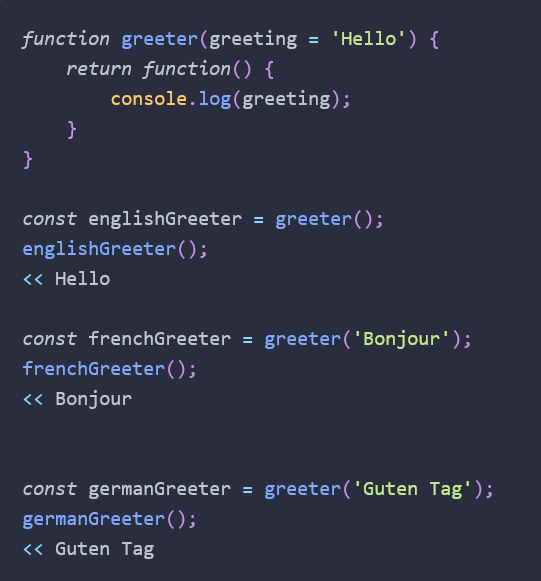

All functions have a length property that returns the number of parameters the function has.
The call() method can be used to set the value of this inside a function to an object that is provided as
the first argument.
If a function doesn’t refer to an object as this in its body, it can still be called using the call()
method, but you need provide null as its first argument.
With apply() you can pass an array the same way, but it's less necessary with the ability to use spread
these days.
You can make custom properties such as item.description = "this is the description of the object".
You can cache function returns to provide them faster in the future if the same arguments are provided.
You can place temporary variables inside of Immediately Invoked Function Expressions in order to make sure
they don't stick around when you don't want them anymore.
IIFE seem to be less necessary or even useful in current javascript, thought, as there are now easier ways
to do the same things.
You can have a function redefine itself by assigning an anonymous function to a variable that has the same
name as the function. Any variable assigned the function will keep the original and not be rewritten for
fresh use later.
A recursive function is one that invokes itself until a certain condition is met.
JavaScript is a single-threaded environment, which means only one piece of code will ever be processed at a
time.
setTimeout() is good for pushing a function out of the stack and to wait until the stack is cleared to run
to prevent hangups.
A promise is created using a constructor function. This takes a function called an executor as an argument.
The executor initializes the promise and starts the asynchronous operation. It also accepts two functions as
arguments: the resolve() function is called if the operation is successful, and the reject() function is
called if the operation fails.
async function loadGame(userName) -- load this with a try catch.
Functions can return functions.

whenever a function is defined inside another function, the inner function will have access to any
variables that are declared in the outer function's scope.
A closure doesn't just have access to the value of a variable, it can also change the value of the variable
long after the function in which it was originally declared has been invoked.
Chapter 13
Ajax allows JavaScript to request resources from a server on behalf of the client.
The most commonly used in Ajax nowadays is JSON.
Fetch API is currently a living standard for requesting and sending data asynchronously across a network.
The redirect() method can be used to redirect to another URL. It creates a new promise that resolves to the
response from the redirected URL.
The text() method takes a stream of text from the response, reads it to completion and then returns a
promise that resolves to a USVSting object that can be treated as a string in JavaScript.
The blob() method is used to read a file of raw data, such as an image or a spreadsheet. Once it has read
the whole file, it returns a promise that resolves with a blob object.
JSON objects can be manipulated with javascript after being called.
Typical information contained in headers includes the file-type of the resource, cookie information,
authentication information and when the resource was last modified.
has() – Can be used to check if the headers object contains the header provided as an argument.